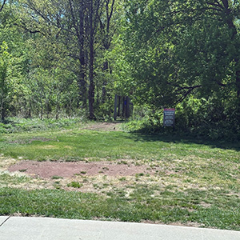
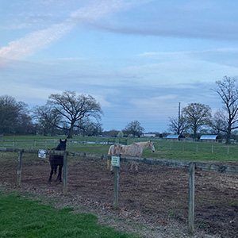

Livingston
While it feels as though Livingston campus is the smallest campus in terms of buildings, it has an expansive amount of undeveloped space and natural reserves. It is the perfect place for bird watching.
1. Ecological Preserve

The ecological preserve consists of 316 acres of preserved land. It is made up of woodlands, wetlands, and meadows which serve as the perfect environment for many different birds. You can encounter Red-tailed Hawks, woodpeckers, and owls if you're lucky.
2. The Quad Near Tillet Hall
This quad consists of the area of land surrounded by Tillet Hall, Lucy Stone, and the Quads. It is home to beautiful weeping cherries and walking paths. You will often come across starlings, Canadian Geese, and sparrows.
Busch
Busch is a large campus with many different birding spots. It being spread out and having many stadiums provides the perfect environment for many different birds.1. Near the Golf Course
The area near the golf course is surrounded by lots of green fields and evergreens. It is a perfect spot for finding vultures, Canadian Geese, Red-tailed Hawks, and other birds of prey.
2. The Green
The lawn that is in between EMSOP, Woody's Cafe, the Library of Science and Medicine, and the Nelson labs is a perfect spot to see Canadian Geese, sparrows, goldfinches, and robins.
College Ave
Even though College Ave is the busiest campus, right across from it is the Raritan River. It is home to a large amount of animals and birds. This is arguably the best place for birding at Rutgers.
1. Raritan River

The best birding spot near College Ave is along the Raritan River. It is home to so many different types of birds including ospreys, egrets, ducks, and occasionally swans.
Cook/Douglass
Cook/Douglass is arguably the least busy campus. Therefore, it is a great spot for birding. In addition to seeing the horses patrolling campus, it is impossible to ignore the birds that live there.1. Cook Farm

The Cook Farm is home to many different farm animals, but it is also home to many different types of birds. You can frequently see Red-tailed Hawks, Canadian Geese, robins, sparrows, and occasionally cardinals.
2. "The Kissing Bridge"
"The Kissing Bridge" overlooks a large ravine in a forested area. It is a great spot for birding since it is secluded from the majority of campus and not frequented by students. You can often see Red-tailed Hawks, Bald Eagles, and various waterbirds like Blue Herons.